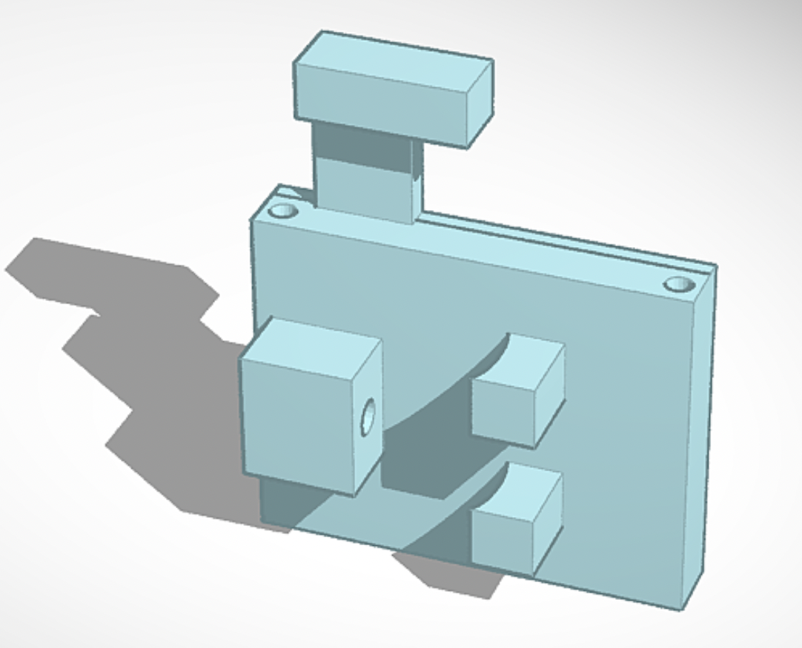
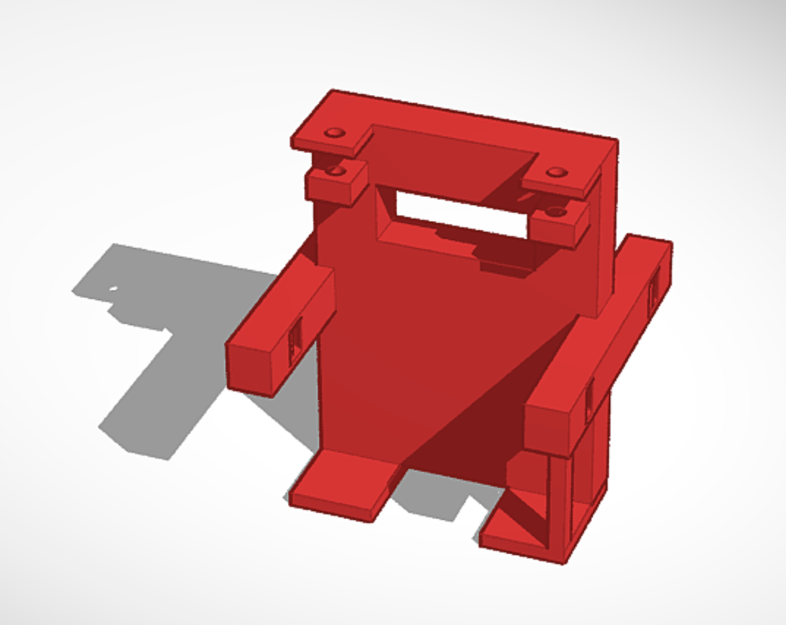
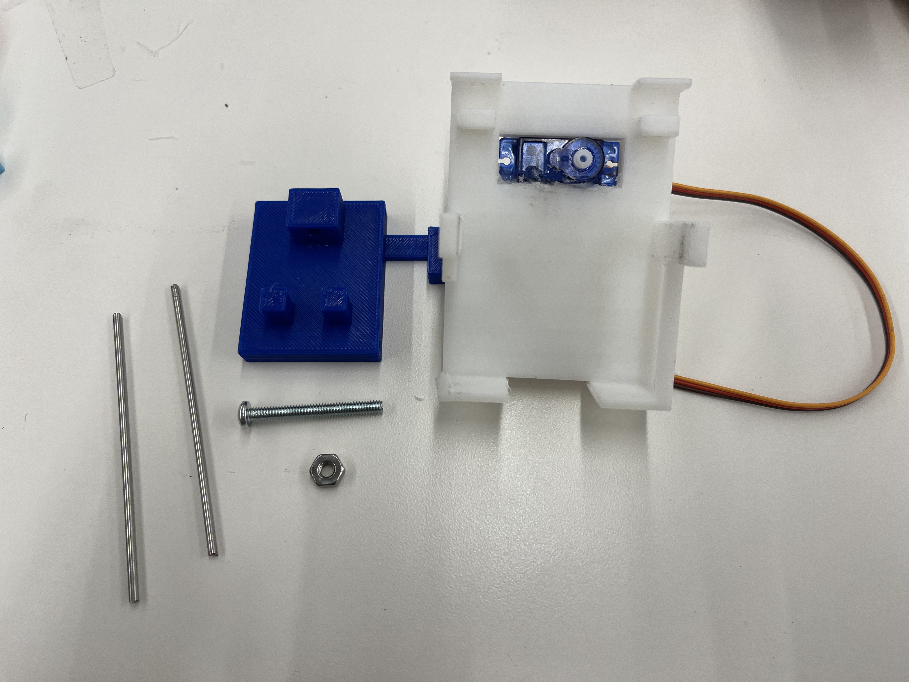
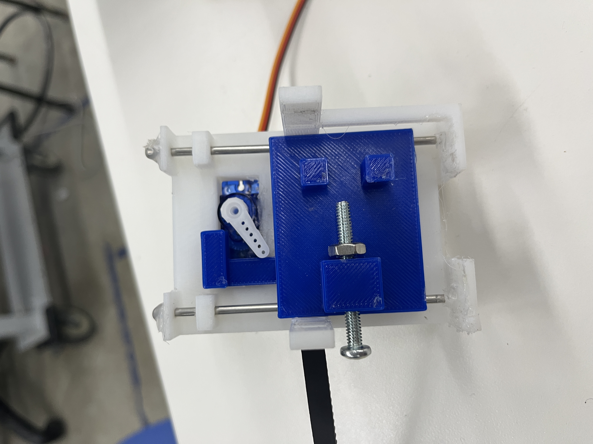
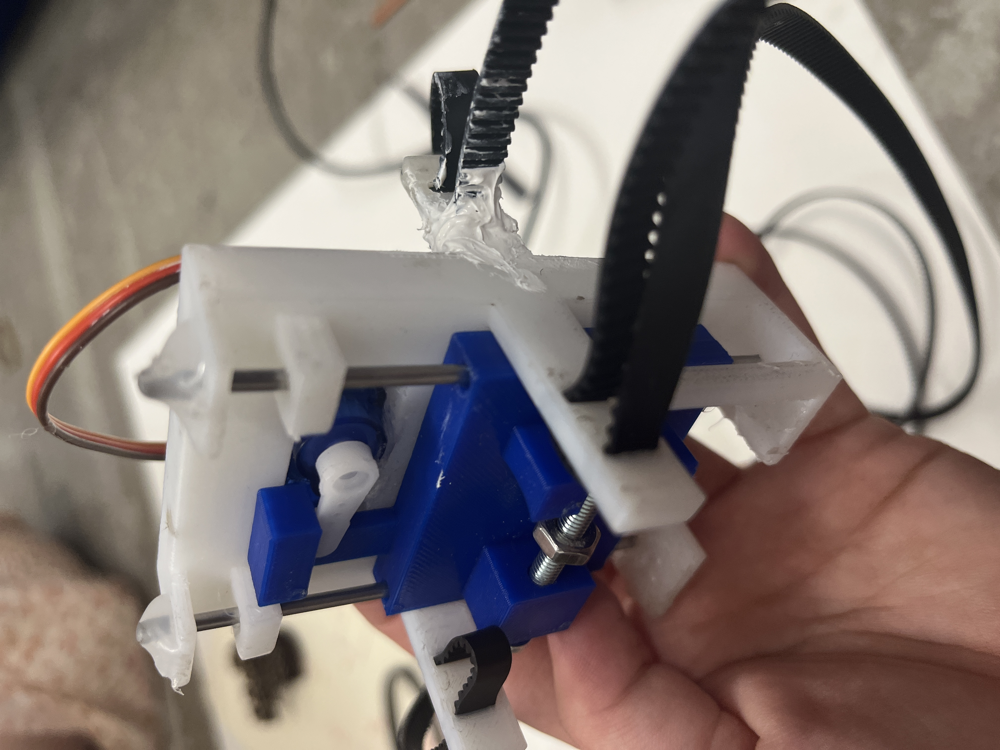
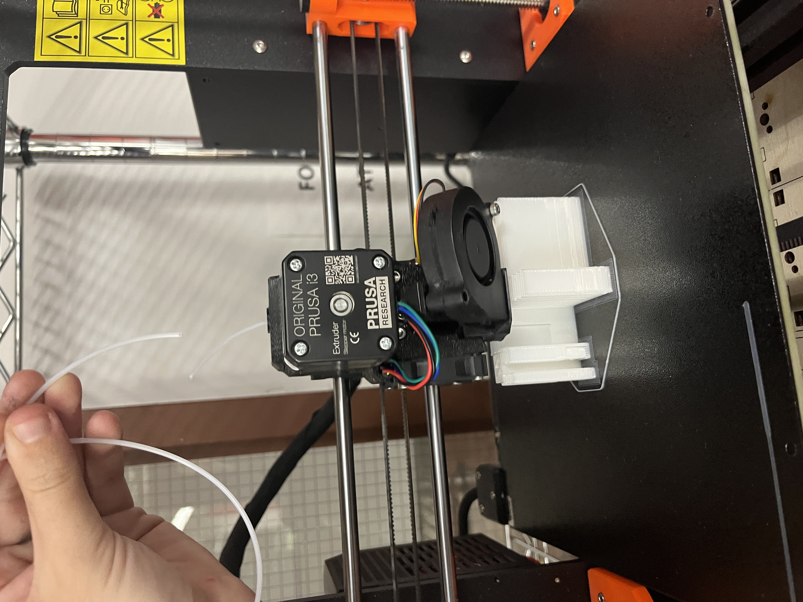
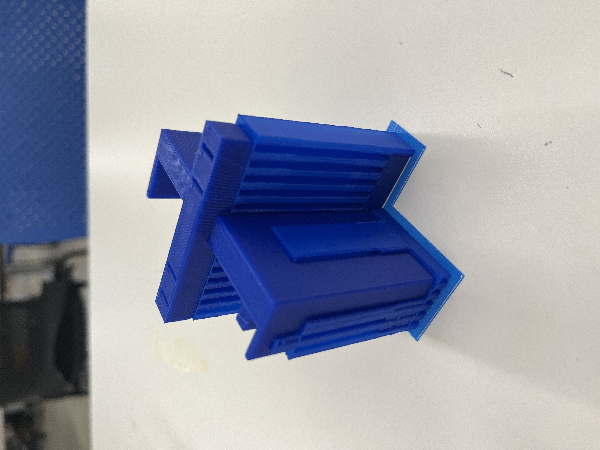
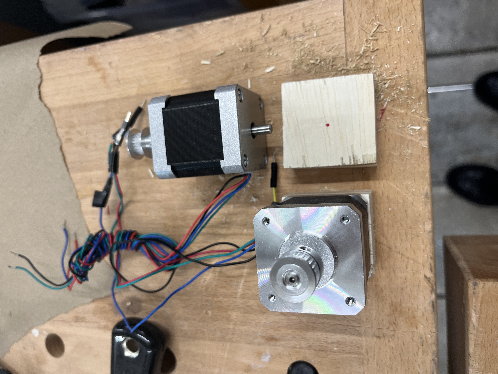
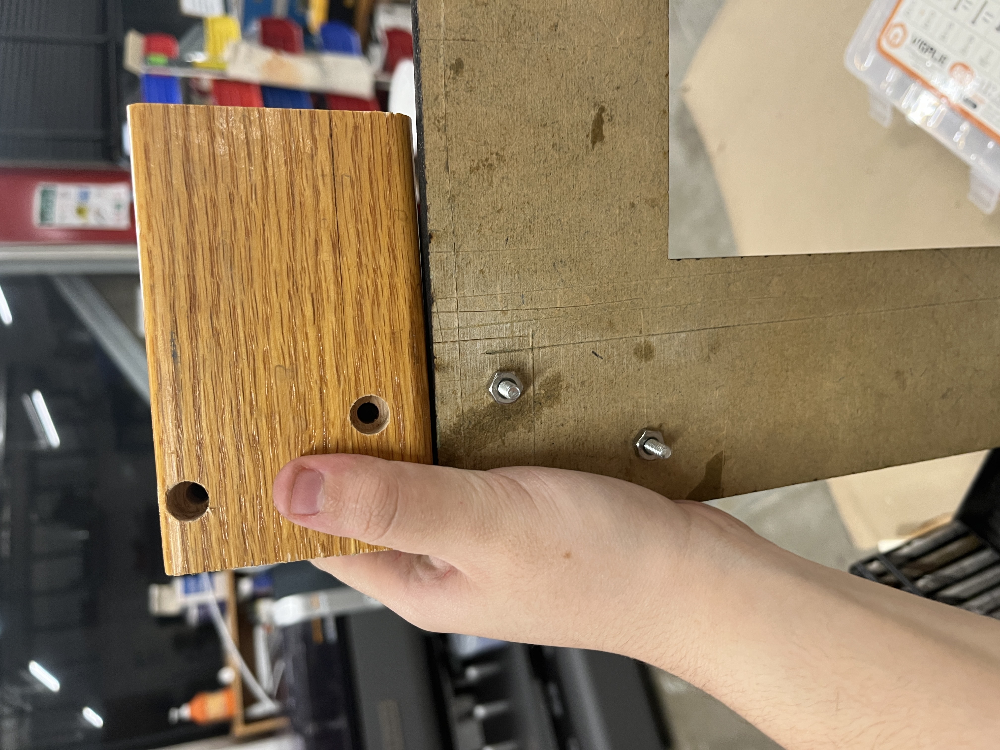

<div class="container-fluid">
<h3 style="text-align: center;"> Final Project Process: Painting Machine </h3>
<h4 style="color: black;background-color:#6EDCF7;"> Step 1: The Revised Goal </h4>
<p> Throughout the semester, my idea of my final project has remained mostly consistent but with significant changes to the specifics of what exactly I will be constructing. The aspects of my original proposal that I will be moving forward with are the goal of creating a tool that can make “precise markings” on a canvas or paper and the accepted challenge of working with paint — a material quite antithetical to the precision I’m hoping for. Ideas I will be abandoning for now are the ideas I had around incorporating sensors into the brush holder itself so that the brush could be intelligent in its distance and angle relative to the canvas. While I still think this would be very cool, I don’t think it’s actually necessary for creating a functional painting machine. I will also not be aiming to make the machine live-controlled as I originally suggested, but I do think that the way I’m building it could allow for this to be programmed in the future.
So the plan for my revised final project is to create a Core XY plotter that moves an end effector along the x and y axis using 2 stepper motors and for the end effector itself to contain a servo motor that can raise and lower the brush it is holding to create a makeshift z-axis (essential to working with paint).
<h4 style="color: black;background-color:#6EDCF7;"> Step 2: The Machine (see Week 10 for more details) </h4>
<p>I described the early stages of my machine-building in my documentation for week 10, but to summarize what I accomplished, my machine is driven by 2 stepper motor pulleys that are connected to other bearings and pulleys by timing belts, such that when you rotate the 2 motors in the same direction the end effector moves horizontally, when you rotate them in opposite directions, it moves vertically, and when you move one at a time, it moves diagonally. One small change I made to the structure after my original build was to add a second nut to the 4 pulleys not connected to motors. I noticed that in order for the pulleys to rotate the screws had to be a little looser and they were starting to wiggle around too much. Rob suggested that by putting a second nut on top of the wood but under the pulley, I could make sure the bottom nut was completely tightened and would keep the screws in place even while giving them more freedom to move on top. This ended up not being quite enough though, as even later in the process I returned again and added 2 washers to every screw (on top of the wood and under the top of the screw) and that finally fixed it once and for all! </p>
<h4 style="color: black;background-color:#6EDCF7;"> Step 3: The End Effector </h4>


<p>The next important step towards my final project was to design an end effector that could hold and lift a paintbrush of different sizes while being attached to the timing belts and sitting flat on the acrylic interior frame that moves along the exterior frame. I looked up as many pen plotter type machines as possible to get inspiration for how I might accomplish this. I decided to make my 3d model in Tinkercad because after my experience making my 3d printed fidget cube in Tinkercad, I was really confident that the intuitive nature of the program would help me make my design. And I think I was right! I have zero regrets about using Tinkercad. After many hours of brainstorming and designing with the help of my dear friend and PS70 alum Sophie Webster, I was extremely excited to do the first test print. The final part was made up of 2 different printed pieces combined with 2 small metal rods that I cut with a saw and a screw and nut to hold the brush in place (and some hot glue). </p>
 <p> The picture here to the left shows the brush holder unassembled and the picture to the right shows it put together! Some key features of the design that I’m proud of are the little slits on the side of the outer piece that are the perfect size for the timing belts to fit through without being able to fall off. I’m also proud of the way the servo motor can sit inside life the entire inside piece by catching on a small hook, though that was an idea I got from the many examples I looked at. I also like the addition of the metal rods to ensure that the vertical motion caused by the servo is smooth and consistent. Everything was turning out great so I attached my timing belt to the assembled brush holder and began to tighten everything. Tragically, in a completely my fault accident, I applied too much pressure to the leg of the outside piece where the belts connect and it snapped. Panicking and not eager to restart a 4 hour print, I tried all kinds of glues to put the piece back together. It actually worked fairly well but I realized the broken piece receives some of the strongest tension in the whole machine so it wasn’t worth the risk of it being weaker than its counterparts or breaking again. So, I carefully took apart the belts and began reprinting the outside piece (quickly editing those legs to be a bit thicker so they’d be less likely to break). Now because nothing can be easy, this print almost failed!  At around the 3 hour mark I went to check on my print and I realized there was a knot in the filament. Freaking out I ran and grabbed scissors and cut the knot so that there was loose filament. Unfortunately the placement of the knot made it so that the piece I cut was only about a foot long, and would certainly not last the hour left in the print. Hoping for the best, I triple checked the filament roll for any more knots and got ready to insert the end into the printer as soon as the existing one ran out. I snapped the picture on the right to show what I was doing. Thankfully this chaotic plan worked and the printer successfully accepted the new filament without stopping the print! I’m not sure if there is a more official way to solve this problem if it ever comes up but I’m very relieved I was able to figure something out. </p>
<p> In the end the print was perfect! Here it is before removing the support structure. I assembled all the pieces once more and attached the servo with hot glue. The video below shows the servo in action with a pen! </p>
<center> <video width="300" height="auto" controls>
<source src="penmovingup.mp4" type="video/mp4">Your browser does not support the video tag.</video></center>
<h4 style="color: black;background-color:#6EDCF7;"> Step 4: The Assembly + The Circuits </h4>  <p> Next I needed to fill in the physical structures of my machine to make sure it can stand flat and even over a canvas or paper. The first thing I needed to do was make a little platform with a hole in it for the motor with a little tail (see image to the left). I cut 2 wooden block to the right size and drilled a hole. This worked swimmingly and was very joyful to me for some reason. Next, I needed to add supports of some kind to the opposite side of the machine so it could lie flat with the motors. I measure the motors + their platforms and looked around the lab to find something that could work. I stumbled on these wood blocks that were perfect! I marked where my nuts and screws stuck out the bottom of the frame and drilled 2 holes (larger for nut and smaller for the screw) to fit over them (see image to the right).
With my frame officially assembled, it was time to move to the software side, starting with the circuit. I had already tested the stepper motors so I knew they were working and I knew how to set them up. With the circuits in place, it was time for some finishing touches (aka a mental break) before moving on to the programming. I went to see what kind of acrylic paint was available in the lab and then used it to cover the atrocious wood of my frame. </p>
<center> <img src="../12/messyprogress.JPG" alt="Messy Circuit" style="width:200px;height:auto;"><video width="250" height="auto" controls>
<source src="paintingtimelapse.mp4" type="video/mp4">Your browser does not support the video tag.</video></center>
<h4 style="color: black;background-color:#6EDCF7;"> Step 5: The Programming </h4>
<p>Unfortunately, here is where everything began to fall apart. I had been planning to model my code after the very impressive one linked in <a href="https://www.instructables.com/CoreXY-CNC-Plotter/">this instructables.</a> Things I loved about this code were that it operated from a menu in the serial monitor and was very user friendly. Their machine was also similar enough to mine that the code seemed like it would translate easily without being too similar that it would feel boring to just copy what someone else already did. The code also allows you to send gcode files for the machine to draw which was very exciting! I painstakingly went through the code to decipher it and figure out how I could adapt it to work for my machine, and I was pleasantly surprised by how well I understood the logic and how everything was being done. I was really excited by the prospects of this code and was mistakenly confident that it would work with little troubleshooting. The motors worked completely fine when I sent simple motor movement commands using delays and all the basics I wanted to avoid, as in the video below, but the further I moved in the direction of the instructables code, the more things began to inexplicably glitch and break on me.
</p>
<center><video width="500" height="auto" controls>
<source src="movementwithpen.mp4" type="video/mp4">Your browser does not support the video tag.</video></center>
<p>
The problems were manageable at first but as I continued trying to troubleshoot, the problems went from the motors moving way too much and at what seemed like random intervals to the motors refusing to turn on at all no matter what previously functional codes I used, and eventually I stopped being able to upload code to my microcontroller at all. I kept switching back and forth between my arduino and my esp32 dev but the problems just got worse and eventually neither microcontroller would respond at all and I had to conclude I broke them somehow. I don’t know how valuable it is to try to remember and list all the many things I tried and experimented with over the approximately 20 hours of nonstop work I spent on this issue, but to name a few highlights I think might be the (or one of the) culprit(s): I had a very difficult time adjusting the current on my motor drivers. I broke at least one by accidentally turning it too high which made me very nervous to continue and even after watching multiple tutorials, I was doubtful that my math and readings were correct for what I was supposed to be aiming for. Second, I was very confused by microstepping and how to correctly wire my driver to change it and where to adjust for that in my code (the motor and driver used in the instructables code had very different defaults). And finally, I think I might be missing a fundamental understanding of how microcontrollers are pulling and giving power because I am managing to break them without having a clue what I’m doing wrong which is very distressing.
</p>
<p>So as not to dwell on the frustrating part of this experience for much longer, I will move on to say that thanks to the kindness and generosity of my classmates I was able to get a new arduino and new motor drivers to replace my dysfunctional ones and this allowed me to get back to where I had been before I started writing any code myself. Not wanting to risk hurting my classmates’ supplies, I decided to stick with the simple codes I had been using earlier in the process to test the motors (simply telling the motors how many steps to take how fast and in what direction). If I had had more time I would’ve figured out a way to translate these simple commands into at least a guide for how that translates to different motions and shapes. I tried to figure out how many rotations move the pen from one side and one corner to the other, but when I was working on it the drivers started acting up again so I got scared and decided to leave it alone until the presentation. For the presentation, I just made random edits to a very simple code and uploaded new versions whenever I / people watching would get bored of the current movement.
For example:
</p>
<pre><code>
#include <Servo.h>
// Define stepper motor connections and steps per revolution:
#define dirPin 9
#define dir2 11
#define stepPin 8
#define step2 10
#define stepsPerRevolution 200
Servo myservo; // create servo object to control a servo
int pos = 150; // variable to store the servo position
int firstpos;
void setup() {
// Declare pins as output:
pinMode(stepPin, OUTPUT);
pinMode(step2, OUTPUT);
pinMode(dirPin, OUTPUT);
pinMode(dir2, OUTPUT);
myservo.attach(3); // attaches the servo on pin 3 to the servo object
}
void loop() {
for (pos = 150; pos >= 0; pos -= 1) {
myservo.write(pos); // tell servo to go to position in variable 'pos'
delay(15);
firstpos=pos;
}
// Spin the stepper motor 5 revolutions fast:
for (int i = 0; i < 5 * stepsPerRevolution; i++) {
// These four lines result in 1 step:
digitalWrite(stepPin, HIGH);
digitalWrite(step2, HIGH);
delayMicroseconds(500);
digitalWrite(stepPin, LOW);
digitalWrite(step2, LOW);
delayMicroseconds(500);
}
for (pos = firstpos; pos <= 150; pos += 1) {
myservo.write(pos); // tell servo to go to position in variable 'pos'
delay(15);
}
delay (1000);
for (pos = 150; pos >= 0; pos -= 1) {
myservo.write(pos); // tell servo to go to position in variable 'pos'
delay(15);
firstpos=pos;
}
delay(1000);
digitalWrite(dirPin, HIGH);
digitalWrite(dir2, LOW);
// Spin the stepper motor 1 revolution slowly:
for (int i = 0; i < stepsPerRevolution; i++) {
// These four lines result in 1 step:
digitalWrite(stepPin, HIGH);
digitalWrite(step2, HIGH);
delayMicroseconds(2000);
digitalWrite(stepPin, LOW);
digitalWrite(step2, LOW);
delayMicroseconds(2000);
}
for (pos = firstpos; pos <= 130; pos += 1) {
myservo.write(pos); // tell servo to go to position in variable 'pos'
delay(15);
}
digitalWrite(dirPin, LOW);
digitalWrite(dir2, HIGH);
// Spin the stepper motor 1 revolution quickly:
for (int i = 0; i < stepsPerRevolution; i++) {
// These four lines result in 1 step:
digitalWrite(stepPin, HIGH);
digitalWrite(step2, HIGH);
delayMicroseconds(1000);
digitalWrite(stepPin, LOW);
digitalWrite(step2, LOW);
delayMicroseconds(1000);
}
delay(1000);
}
</code></pre>
<h4 style="color: black;background-color:#6EDCF7;"> Step 6: The End Result + Reflection </h4>
<img src="../12/presentationlook.JPG" alt="Presentation" style="float:left;width:200px;height:auto;">
<p>
In the end, I was at least able to build a fully functional Core XY machine! I think that in the hands of a much better coder, my machine could really shine, which brings me some solace. I was really proud of my brush holder design and I’m glad to see that at least on the hardware side, my project came together as I intended. I did try to put in a paintbrush and have it pick up paint which worked to some degree but it would take much more fine tuning to make it able to cleanly pick up a consistent amount of paint. For demo purposes, I manually put paint on the brush and allowed it to make a complete mess on the paper (though it did show that it is capable of making very clean lines and shapes which was exciting!).
Overall, this project has been very difficult and has probably caused me more stress and sorrow than pride and satisfaction but I am still grateful for the experience and glad I did it. Maybe someday I'll be able to come back to this project and finally get it somewhere I can be proud of. And as Gabby wisely said to cheer me up (thank you Gabby), I've learned so much so I’ll only be able to do better next time!
</p>
<center><video width="500" height="auto" controls>
<source src="movementwithpaint.mp4" type="video/mp4">Your browser does not support the video tag.</video></center>